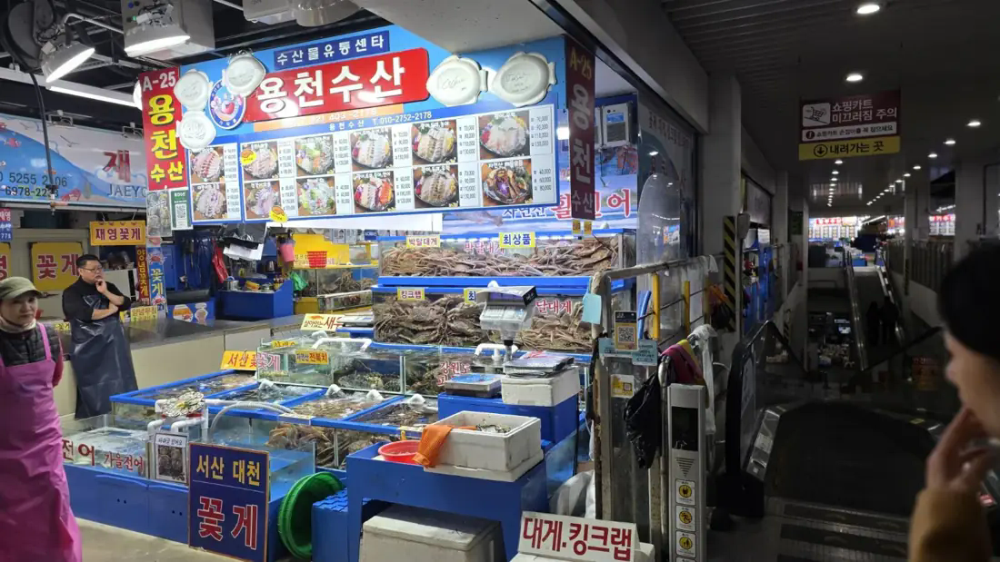

🐟
활어 모둠회
샘플 메뉴현장 메뉴판 사진 참고
가격 확인 중판매 확정 전
대게부터 모둠회까지 다양하게 만나는 바다
현재 각 입점 업소는 입점을 준비 중이며, 본 페이지는 샘플 페이지입니다.
메뉴·가격은 샘플 또는 촬영 당시 참고 정보입니다. 실제 판매 품목과 가격은 입점 업체 확인 후 확정됩니다.사진에서 확인되는 A-25 표기와 활어·꽃게·대게 간판을 바탕으로 입점 준비용 상세 페이지를 제작했습니다.

수산 A-25 · 사진 속 표기, 현장 확인 필요
정식 메뉴·가격·주문 방법·방문 안내는 업체 확인 후 업데이트됩니다. 현재는 샘플로만 제공됩니다.
입점 준비 매장 더 보기 →